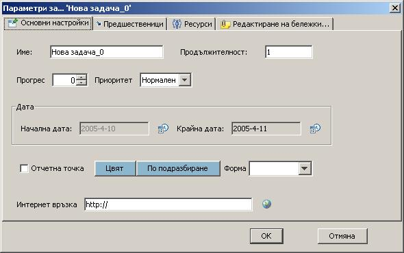

GanttProject - Редактиране на параметри
Можете да редактирате параметрите на всяка задача в диалогов прозорец, като използвате меню
Параметри, или като щракнете два пъти върху името на задачата, или Гант ивицата и.
Диалоговият прозорец за редакция на параметрите на задача ви позволява да въведете името на задачата, нейната продължителност, процента на изпълнение,
датите на начало и край, цвета на отговарящата и гант ивица, нейният приоритет, както и обяснителни бележки.
Можете също да зададете зависимости между задачите, като избирате различни предшественици.
Това може да стане като изберете второто пано от диалоговия прозорец
и изберете името на предхождащата задача и типа на зависимостта.
